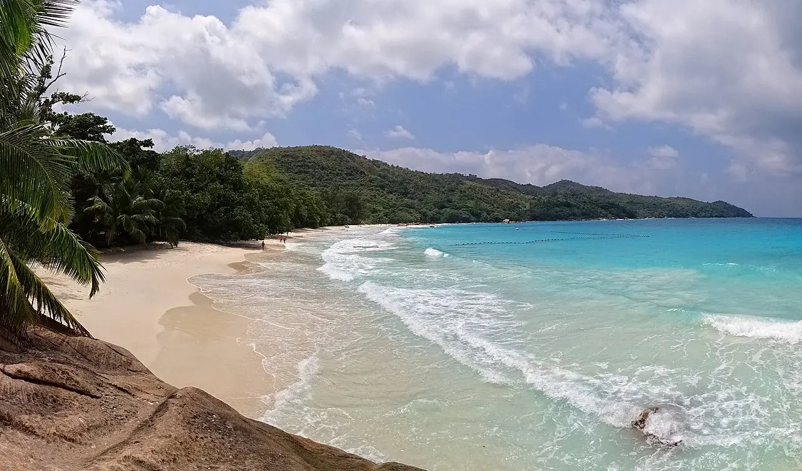

Anse Lazio
Praslin, Seychelles · snorkeling, baignade

Au nord-ouest de Praslin, une plage bordée de végétation et de rochers granitiques. Anse Lazio est une escale des Seychelles pour profiter du bord de mer et découvrir les fonds proches du rivage.
- Lieu
- Praslin, Seychelles
- Niveau
- Variable selon les conditions
- Activités
- snorkeling, baignade
- Type d'eau
- Mer / océan
- Coordonnées
- -4.29, 55.70 (position approximative du secteur)
Ouvrir dans Ocean Buddy Télécharger sur l'App Store
Source : Wikipédia · géographie du lieu.